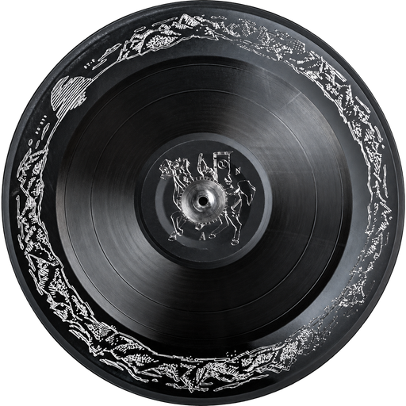
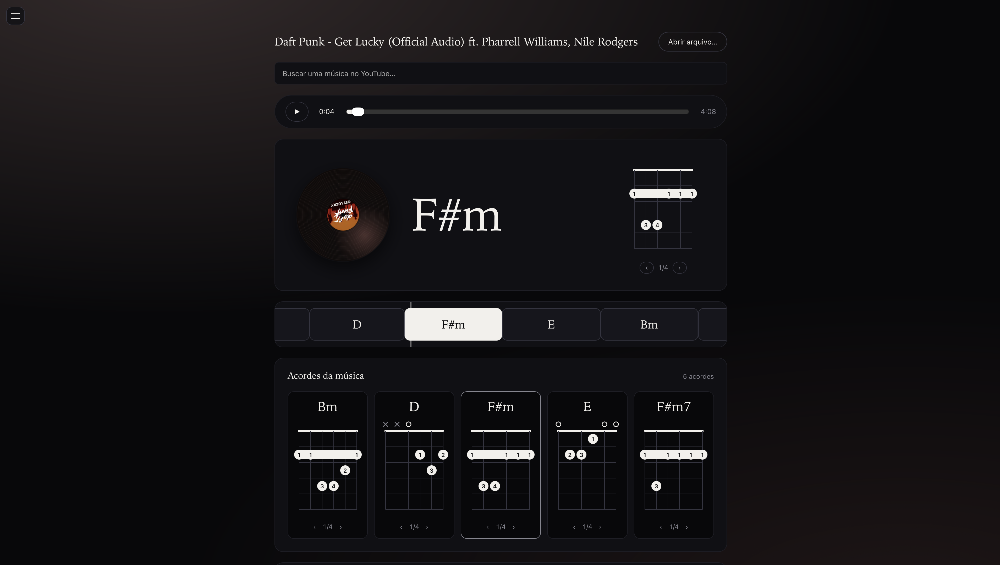
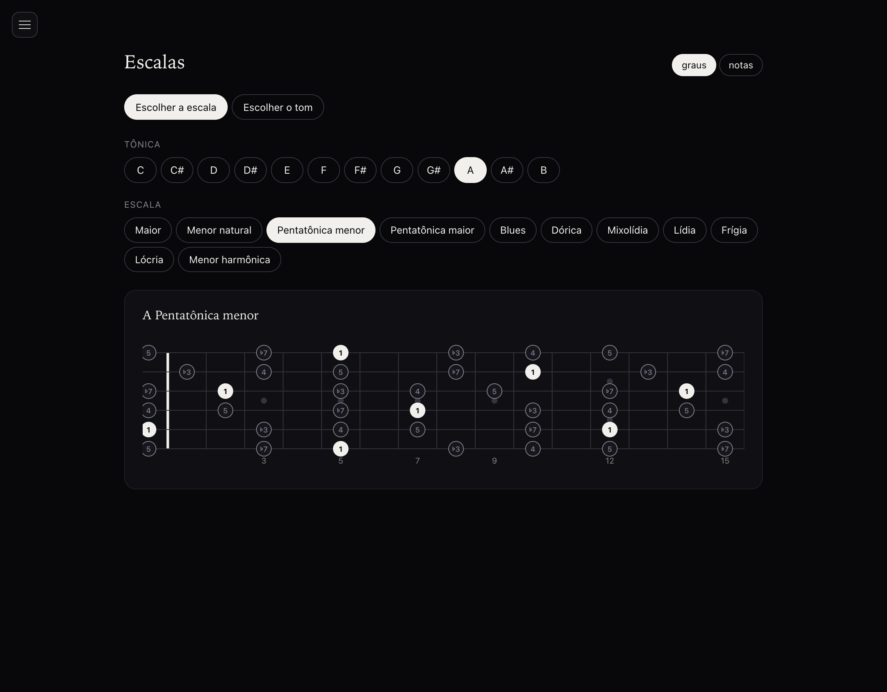
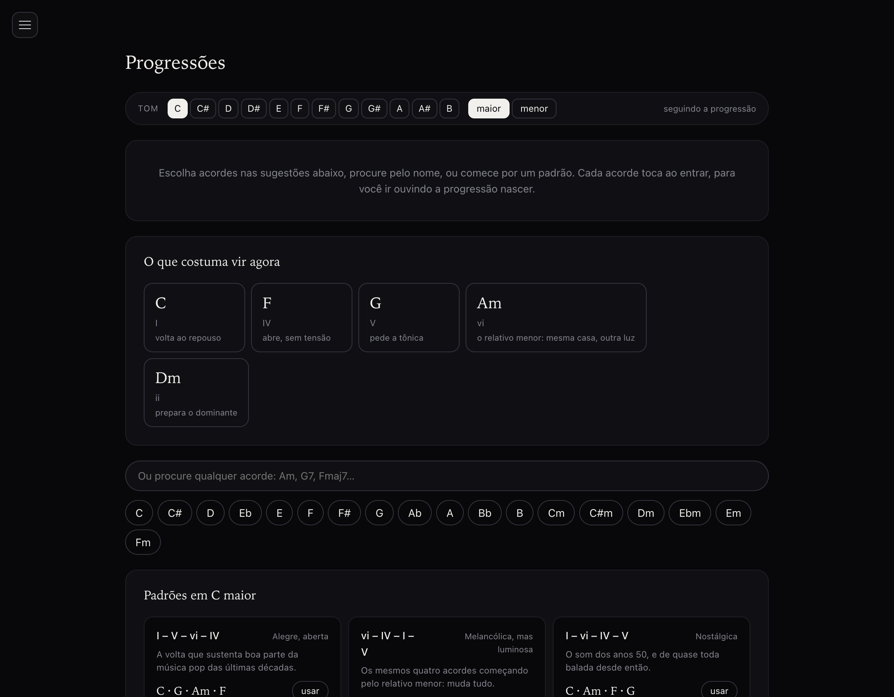

A native desktop app that listens to a song and shows you the chords — live, on a guitar neck, with nothing sent to a server.
Search a song or open a file. The rest — hearing it, naming the chords, keeping them in sync — happens on your machine, in a Rust process you can watch in Activity Monitor if you don't believe it.

Search a song on YouTube or open a file from disk. Chords are detected locally and run on a timeline synced to the audio, drawn live on a guitar neck as the song plays.
Everything you open is kept in a repertoire and reopens instantly — no re-importing, no re-analyzing, no waiting through the same 30-second model load twice.

Every major scale, mode, pentatonic and blues shape, in any key, across the whole neck.
Pick a scale directly, or pick a key and see everything that fits over it — the seven modes, both pentatonics, the blues scale — labeled by scale degree or by note name, whichever you think in.

Build a chord sequence and hear each chord as it's added. The app infers the key from what you've built and suggests what tends to come next, with the reasoning ("V — pulls toward the tonic").
Twelve well-known progressions — pop, jazz, blues, the Andalusian cadence, Pachelbel's canon — load in any key, and your own progressions save and reload.
Shown here in C. Pick a different tonic in the app and every chord below transposes with it.
The turnaround that carries a good chunk of the last few decades of pop.
The same four chords starting on the relative minor — and it changes everything.
The sound of the 1950s, and nearly every ballad written since.
The bass walks down half-step by half-step to the dominant.
Minor that never resolves: it circles without arriving, which is why it sounds big.
Pure natural minor, no major dominant. Sounds modal, almost folk.
The cadence that organizes practically every jazz standard.
Three dominant-seventh chords; the twelve-bar form is born from this.
The sequence from Pachelbel's Canon, recycled for three centuries.
The ♭VII borrows from outside the major key and takes the weight off the dominant.
The harmony barely moves — what descends is the bass, step by step.
Descends and returns without resolving, building tension that never releases.
All eleven, drawn across the whole neck, switchable between scale degrees and note names.
A Rust shell owns the window and the analysis pipeline; a short-lived Python worker does the actual listening. Nothing about the song ever leaves the machine.
Svelte 5 + TypeScript
│ typed commands
Tauri boundary (Rust)
├── native dialogs
├── subprocess supervision (process.rs)
├── chord analysis (analysis.rs)
└── on-disk cache
│ bounded JSON, one invocation per song
Python worker (LV-Chordia + torch)
Rust checks that the worker's output is well-formed — timestamps finite and ordered, confidence in range, no gaps — and rejects what isn't. It never rewrites or smooths a chord label itself.
Analysis is keyed by the SHA-256 of the audio itself. Renaming or moving a file never forces a re-analysis, and an unreadable cache degrades to slowness — never to an error on screen.
No time-stretch engine, no beat or BPM detection, no dictionary picker — features a reference project has that this app leaves out on purpose, because a one-user tool doesn't need to carry them.
Needs ffmpeg, yt-dlp,
Rust and uv once. After that, it's a normal
Tauri app.
brew install ffmpeg yt-dlp curl --proto '=https' --tlsv1.2 -sSf https://sh.rustup.rs | sh npm install uv sync --directory tools/chord-worker npm run tauri dev
Full install, build, and test commands (npm test,
cargo test, pytest) are
in the
README.